A Personal Project | Tools: Sketch, Illustrator, Proto.io
As a food lover, I sincerely agree “there is no sincerer love than the love of food.” I think besides loving it, it is also important to know how to eat wisely. There are a variety of apps designed for users to keep track of the food. While they provide tables, numbers, and percentages as nutrition feedback, they are not easily understandable. I want to design an app that provides further explanation of those nutritional data, so that users can deeply understand their influence on our body and what they should do to improve health.
Content
- Ideation
- Brainstorm with a persona
- Research
- Products for recording meals
- Products for health advice
- Prototype
- User Interface
- Sign up and select your health goal
- Record your daily nutrition intake
- Analyze and get customized feedback
- Insight
With all the research, I brainstormed a persona to create a narrative. I dug into details to clarify users’ needs, goals and ideate solutions from her point of view.
After researching existing nutrition apps on the market, I categorize them into two types: recording and consulting.
For the recording type, the app lets users record the food they eat and give back data about calories, carbs, protein, and fat. While only knowing these numbers without further explanations, I as a user wish to know more about what do they mean in terms of my health conditions and what can I do to improve.
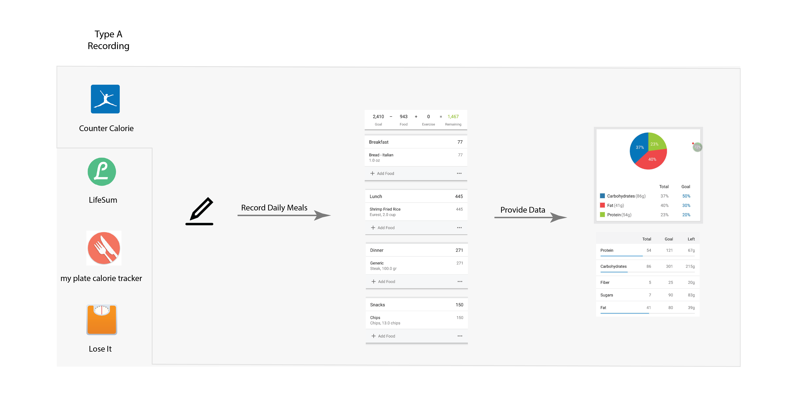
For the consulting types, the user interface starts with the health issues you want to improve, and then list the food recommendation lists. It acts as a health guide Wikipedia, while it is not customized to each user.
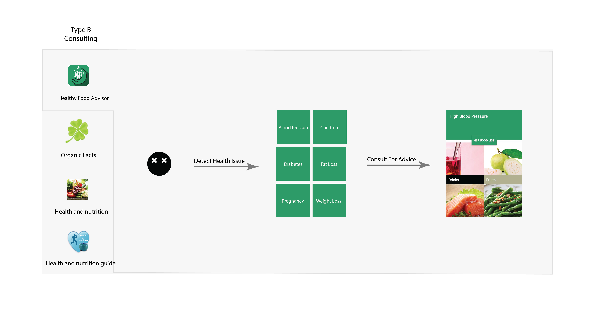
How might we combine the two types?
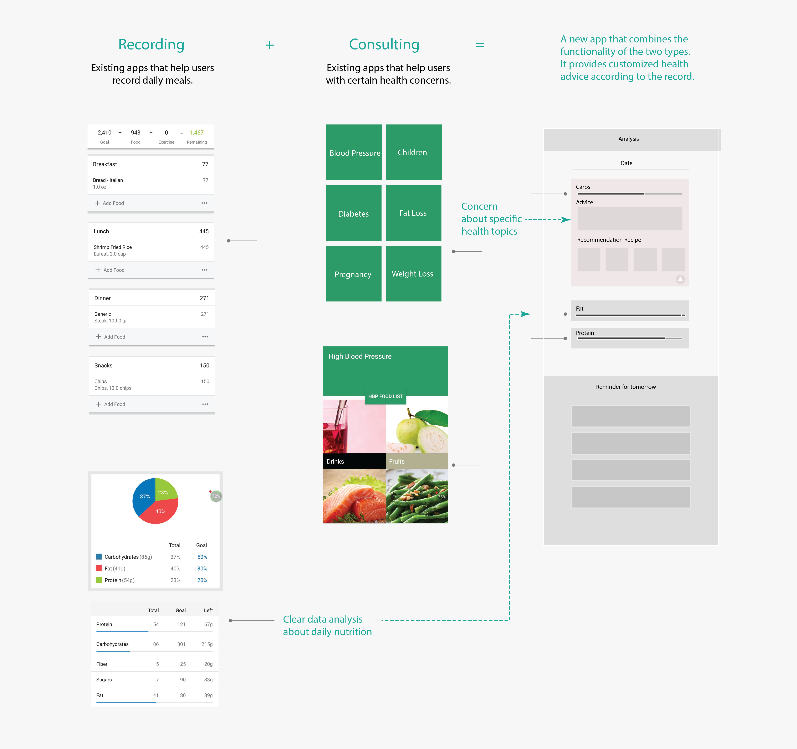
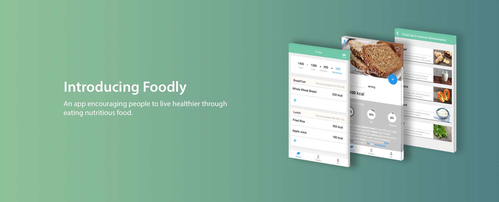
Foodly is a health app that designed to not only to record but also give you customized health advice.
The app allows users to learn more about food component and nutrition. Furthermore, according to health topics users choose and daily meal records, it provides customized health advice and set a reminder on a daily basis.
User Flow
When signing up, users choose specific health topics they are interested in. After they input daily meals, it summarizes nutrition intake and provides customized health advice based on users’ health goal.
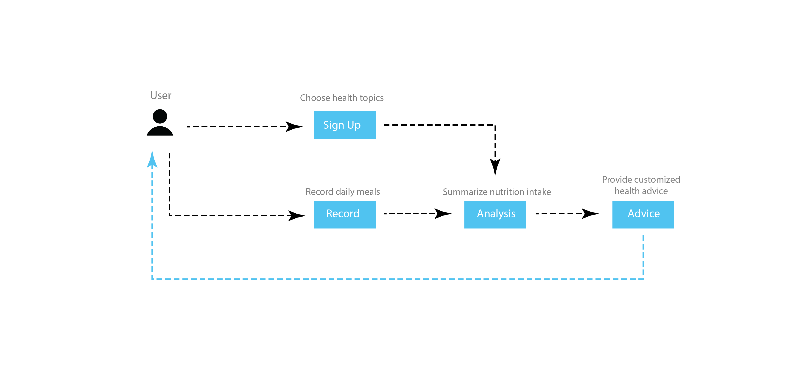
Sketches, wireframes and prototypes
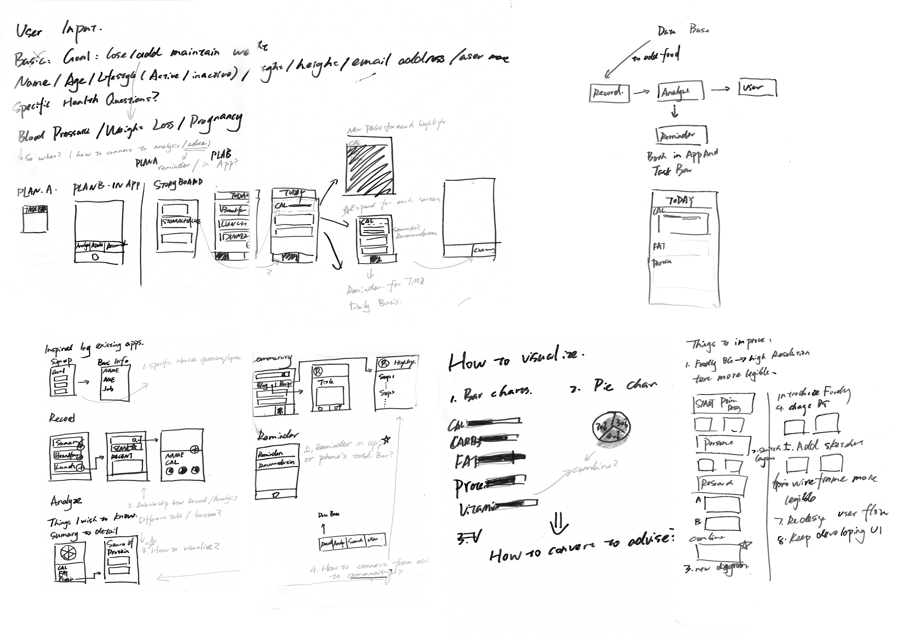
Smooth user experience and clear user interface design
Proto.io Prototype
Front End Prototype
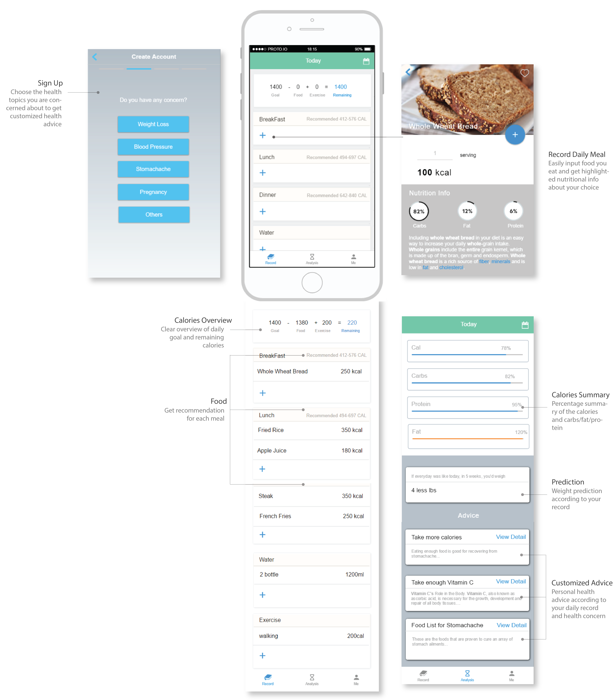
Sign Up
Customize your own plan to live a healthier lifestyle by first inputting some basic info and your health concern.
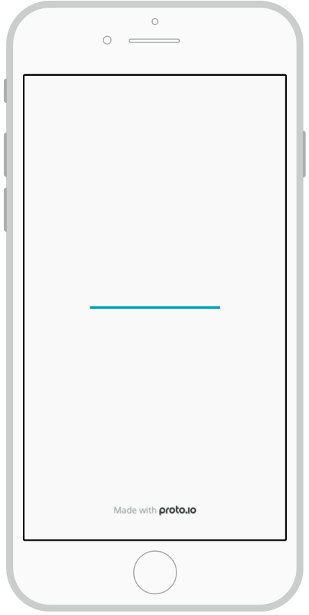
Record
Add food to your record to keep track of your daily food intake. The app would use the data to analyze your health conditions.
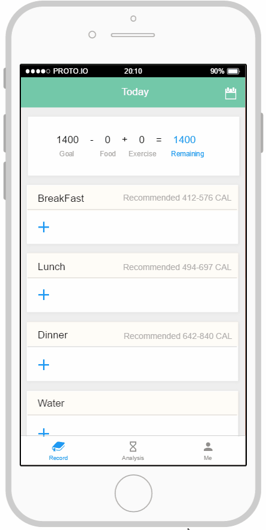
Analyze
After analyzing input and considering the health concern, it provides personal health feedback and advice.
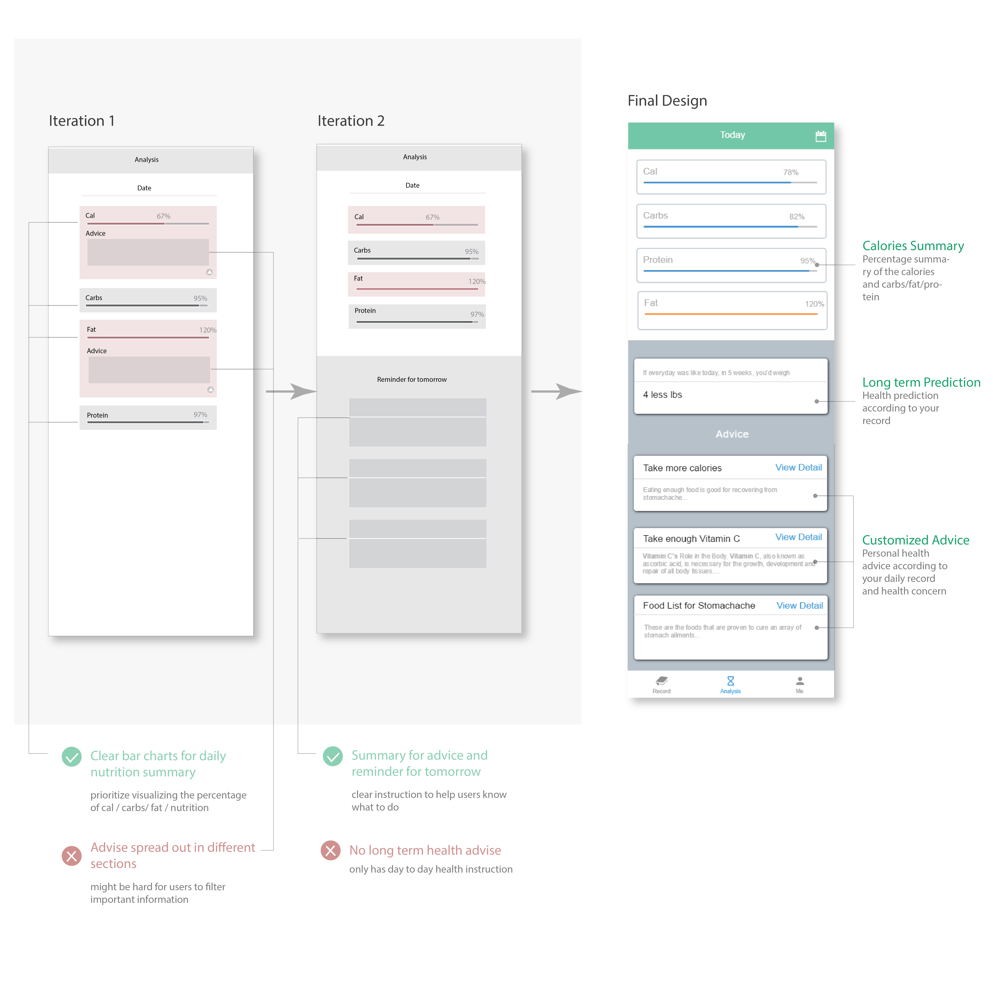
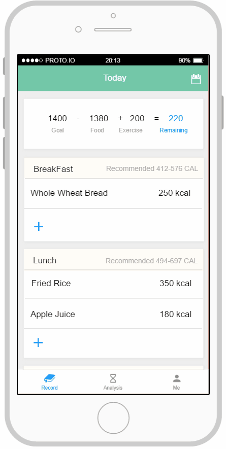
Not only telling, but also helping people understand.
Through the design process, I realize that a health app is not simply helping the user to record data of meals and exercises, it is an educational process, it is also a process to help them understand their body in a more systematic way.
More to explore.
There are many people who live under the sub-health condition and need health advice. Some health issues can be greatly improved by eating wisely, while there are also much more: exercise, sleep, mental health etc. More products and services should and need to be developed, so people can have the knowledge of how to improve health. Changing behavior day by day can make a large impact on the long term.
There are still many improvements can be made to the design. I'll continue to revise, learn and grow.